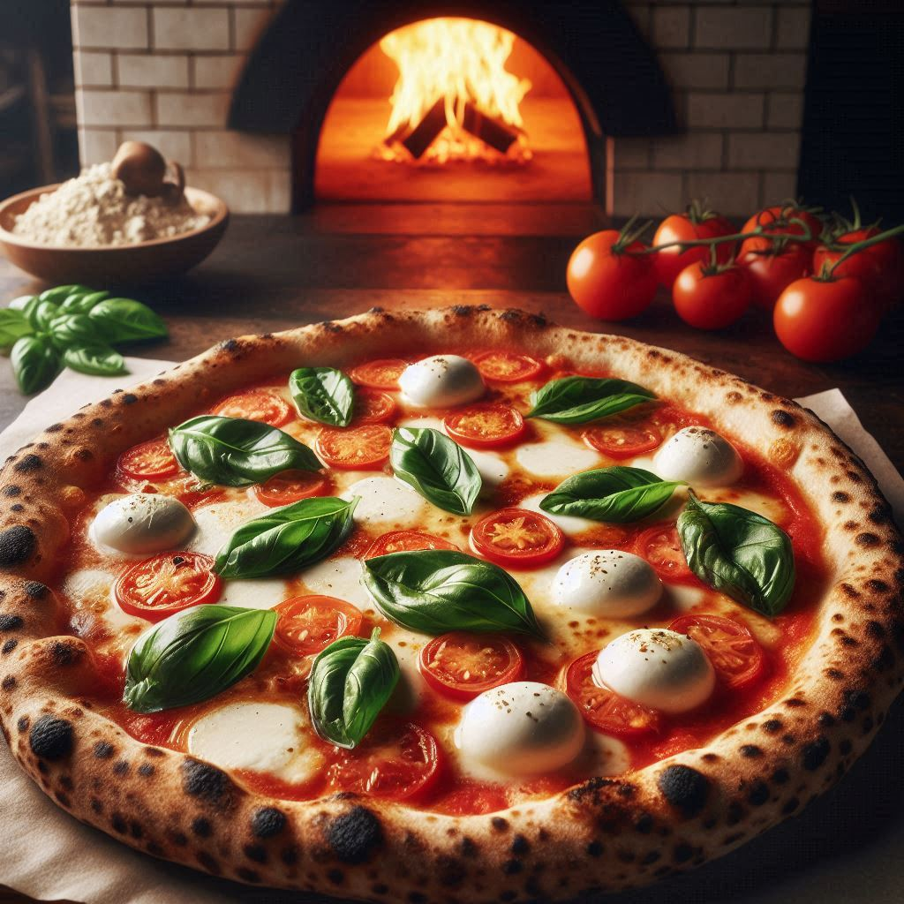

Asgardian Pizza

Ingredients:
- Mölnir Dough: Homemade or store-bought
- Odin’s Tomato Sauce: Rich and flavorful, preferably homemade
- Valhalla Mozzarella: Fresh and creamy
- Basil of the Gods: For a touch of green and flavor
- Elven Olive Oil: Extra virgin for drizzling
- Thor’s Sea Salt: To taste
- Loki’s Garlic: Minced, for an extra kick
- Heimdall’s Parmesan: Grated, for a finishing touch
- Flour of the Nine Realms: For dusting the dough and achieving a slightly charred crust
Steps:
- Prepare the Mjölnir Dough: Roll out your pizza dough on a floured surface until it’s about
12 inches in diameter. Make sure the edges are slightly thicker to hold the toppings.
- Preheat the Oven: Preheat your oven to the highest temperature possible (usually around 500°F or 260°C).
If you have a pizza stone, place it in the oven to heat up.
- Add Odin’s Tomato Sauce: Spread a generous layer of tomato sauce over the dough,
leaving about an inch around the edges for the crust.
- Add Valhalla Mozzarella: Tear the buffalo mozzarella into pieces and scatter them evenly over the sauce.
- Season with Loki’s Garlic and Thor’s Sea Salt: Sprinkle minced garlic and sea salt over the pizza.
Drizzle a bit of Elven Olive Oil on top.
- Bake the Pizza: Carefully transfer the pizza to the preheated oven (or onto the pizza stone).
Bake for about 10-12 minutes, or until the crust is golden and slightly charred, and the cheese is bubbly and melted.
- Add Basil of the Gods: Once the pizza is out of the oven, scatter fresh basil leaves on top.
The residual heat will slightly wilt the basil, releasing its aroma.
- Finish with Heimdall’s Parmesan: Grate some Parmesan cheese over the top for an extra layer of flavor.
- Serve: Slice and serve your Asgardian Pizza hot, and enjoy the divine flavors!